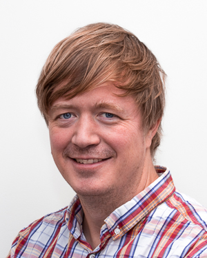

Foredrag
Fagstrategi 2017
Fagsjefene presenterer arbeidet med fagstrategi for 2017; satsningsområder, samarbeid, felles referansearkitektur, kundemuligheter og fagaktivitet.
Keynote (20 min), Lørdag 1. april 09:00-10.30, track: Rom 1

Jan Henrik Gundelsby
Jan Henrik er fagsjef i Knowit Objectnet. Jobber for tiden litt hos Oslo kommune med arkitektur og prosess. Driver også med salg, marked og hvordan vi skal få de rette nye prosjektene. Glad i naturen og lidenskapelig opptatt av fag!

Haakon Spilde
Haakon er fagsjef i Knowit Objectnet. Haakon er lidenskapelig opptatt av prosess og metode, med særlig fokus på Agile teknikker. Hvordan lære av sine feil, hvordan endre sine metoder og prosesser til det bedre og hvordan få et team til å fungere optimalt er tema som opptar Haakon.
Tverrfaglig teamarbeid i kolonial.no
Kolonial.no er Norges største matbutikk på nett, og Nordens raskest voksende dagligvareselskap på nett. Christian Mikalsen er teknologisjef og en av gründerne bak suksessbedriften. Den tverrfaglige hverdagen og samhandlingen mellom det digitale og det fysiske er en av hovedutfordringene i Christians hverdag, og en av styrkene til gründerteamet.
Keynote (60 min), Lørdag 1. april 09:00-10.30, track: Rom 1

Christian Mikaelsen
Christian Mikalsen er teknologisjef og en av gründerne bak suksessbedriften kolonial.no. Christian har informatikk-bakgrunn fra Universitet i Oslo, og har mange års erfaring fra kryssfunksjonelle IT-prosjekter.
Maskinlæring - et raskt overblikk
Foredrag (15 min), Lørdag 1. april 10:45-12:00, track: Rom 1

Ole Grashei
Ole gikk ut fra NTNU i 2013 med en sivilingeniørgrad i datateknikk. Fra forvaltningsprosjekter har han fått innsikt i komplekse foretningsapplikasjoner og prosjektprosessen. Gjennom sine prosjekt-engasjementer i NSB har Ole vært involvert både i kjerne-billettsystem (Java-utvikling) og salgskanalen for konduktører (Android-utvikling for Mobile Terminaler / smarttelefon). Ole faglig interessert og er jevnlig å se på meetups om utvikling, arkitektur og maskinlæring.

Johan Reitan
Johan er en systemutvikler med master i Datateknikk ved NTNU der han spesialiserte seg i kunstig intelligens. Hovedinteressen har vært maskinlæring, gjerne sammen med språkteknologi, som han har jobbet mye med. Linux og åpen kildekode er en lidenskap, og mye av fritiden hans går med på eksperimentering med og bidrag til åpne prosjekter. Han har mye erfaring med Android, Java og Kotlin, inkludert Android TV og Android Things, samt Python og diverse Python-rammeverk, men har også jobbet med .NET.

Patrik Bakken
Patrik startet i Knowit Objecnet i august 2016 etter 3 år i USA på Illinois State University, og 3 år på NTNU i Trondheim hvor mastergraden ble fullført. Kjernekompetansen ligger i back-end utvikling i språk som bl.a. Java og C++. Patrik er veldig interessert i å lære og ser alltid etter nye utfordringer.

Stian Lågstad
Stian ble uteksaminert fra Universitetet i Oslo i juni 2016 med A på masteroppgaven i bioinformatikk. Gjennom studiene har han fått erfaring med Python, R, Java, LISP, og gjennom deltidsjobben som konsulent for Realfagsbiblioteket jobbet han mye med Javascript. Hos Knowit Objectnet gikk han inn i LISA-prosjektet hos NSB, der han jobber med Java og rammeverk som Spring og Feign.
Blockchain - et raskt overblikk
Foredrag (15 min), Lørdag 1. april 10:45-12:00, track: Rom 1

Simen Skoglund og Sigurd Lund
Den beryktede duoen har stadig nye idéer om hvordan blockchain skal revolusjonere verden, men så langt så har de lite å vise til av applikasjoner som er tilgjengelig for de store massene. Nå har de derimot noe stort på gang, så sørg for å få med deg workshopen om blockchain!
Frontend - state of the union
Har du lyst til å bli frontstykkeutvikler på verdensveven? Vet du hva det egentlig innebærer? Det vet vi, og vi gir et innblikk i det komplekse beistet som venter i edderkoppnettet. I tillegg vil Runar kort fortelle om hvordan det behagelige livet er i Elm-land for tiden.
Foredrag (15 min), Lørdag 1. april 10:45-12:00, track: Rom 1

Christoffer Eliesen
Christoffer er en engasjert utvikler som brenner for IT. Han er nysgjerrig og glad i å lære nye ting. Han stiller høye krav til seg selv og det han leverer, men er pragmatisk når det trengs. Hans interesse for IT spenner seg hele veien fra operativsystem til brukergrensesnitt, og han er derfor en naturlig fullstack og 'devops' utvikler. I disse tider er det frontend som er i vinden og Christoffers hjerte følger etter. React og Node er spennende teknologier som passer han midt i blinken. Både 'gammel' jQuery og ny React er teknologier som er givende å jobbe med for Christoffer. Flere års erfaring har gjort han trygg i rollen som konsulent. Han er beskjeden, samtidig som han er en dyp tenker med rolige øyne og et brennende hjerte.

Runar Furenes
Runar har jobbet i Oslo kommune-prosjektet de siste 3 årene. Der har han hovedsaklig drevet med backendutvikling og scripting i hhv Java/Scala og Python. Han er veldig glad i funksjonell programmering, og har det siste året prøvd seg på frontend-utvikling i Elm.
Hvor er serveren min?
Du har hørt noen nevne Serverless en gang, men vet ikke helt hva det er? Her får du en introduksjon til konseptet serverless computing. Jeg forteller deg også litt om AWS Lambda og AWS Api Gateway.
Foredrag (15 min), Lørdag 1. april 10:45-12:00, track: Rom 1

Kenneth Stigen
Kenneth har jobbet i som konsulent siden 2004, og i Knowit Objectnet siden januar 2010. Kenneth har sin kjernekompetanse innenfor arkitektur og utvikling av store løsninger på java-plattformen.
Lean startup - an introduction
We all have a business idea. But how exactly does an idea become a business? And how can you be sure that anyone wants what you’re selling? Discover how this is relevant to Knowit Objectnet.
Foredrag (15 min), Lørdag 1. april 10:45-12:00, track: Rom 1

Michael Johansen
A software consultant during the day and a startup founder during the night. At NTNU I studied entrepreneurship, computer science and psychology. As part of my startup venture I've gotten first-hand experience with the startup scene in both Boston and in Silicon Valley. I care more than most people about startups, and it's a topic on which I'd like to share my insights.
Quiz
Svar på Kahoot-quizen så godt du kan for å komme på riktig restaurant på kvelden...
quiz, Lørdag 1. april 12:00-12:30, track: Rom 1

Joakim Lehn
Joakim Lehn er den offisielle maskoten fra trønderlag for knowit. Villtrønderen har lovet å ikke bare ha spørsmål om RBK, samt prøve å få med noen temaer man har hørt om sør for Dovre.

Christian Peter
Frontend utvikling er det Christian brenner mest for. Å kombinere tanker fra både designere og utviklere er det som skal til for å skape et frontend der brukeren trives. Denne interessen er noe Christian fikk mot slutten av studiene. Han syntes det også er spennende å utvikle backend systemer i kombinasjon med frontend. Ved å utvikle både backend og frontend får man en helhets forståelse der sluttresultatet blir bedre. Christian liker selv å kalle seg en fullstack-utvikler. I tillegg til utvikling, finner Christian det svært interessant å interaktere med kunden slik at man kommer frem til den beste løsningen.
Fagstrategi 2017
Fagsjefene presenterer arbeidet med fagstrategi for 2017; satsningsområder, samarbeid, felles referansearkitektur, kundemuligheter og fagaktivitet.
Keynote (20 min), Søndag 2. april 09:30-09:40, track: Felles
Jan Henrik Gundelsby
Jan Henrik er fagsjef i Knowit Objectnet. Jobber for tiden litt hos Oslo kommune med arkitektur og prosess. Driver også med salg, marked og hvordan vi skal få de rette nye prosjektene. Glad i naturen og lidenskapelig opptatt av fag!
Haakon Spilde
Haakon er fagsjef i Knowit Objectnet. Haakon er lidenskapelig opptatt av prosess og metode, med særlig fokus på Agile teknikker. Hvordan lære av sine feil, hvordan endre sine metoder og prosesser til det bedre og hvordan få et team til å fungere optimalt er tema som opptar Haakon.
Bli en vinkjenner ved hjelp av maskinlæring. Helt utrolig! Klikk her for å se hvordan
I denne workshoppen skal vi ta en litt annerledes tilnærming til vinsmaking: Klarer vi å forutse vin-ratings ved hjelp av maskinlæring? Vi skal innom kjente algoritmer slik som nearest neighbour, random forests og support vector machines - alt i vår jakt etter å bli bedre vinkjennere. Dette blir en god blanding av teori og praksis: Deltagerne jobber sammen i lag for å løse oppgaver med python, scikit og andre godsaker, mens Ole, Patrik, Johan og Stian sørger for at dere får teorien som trengs underveis. Vel møtt!
Workshop (4.5 timer), Søndag 2. april 09:45-14:15, track: Rom 1
Ole Grashei
Ole gikk ut fra NTNU i 2013 med en sivilingeniørgrad i datateknikk. Fra forvaltningsprosjekter har han fått innsikt i komplekse foretningsapplikasjoner og prosjektprosessen. Gjennom sine prosjekt-engasjementer i NSB har Ole vært involvert både i kjerne-billettsystem (Java-utvikling) og salgskanalen for konduktører (Android-utvikling for Mobile Terminaler / smarttelefon). Ole faglig interessert og er jevnlig å se på meetups om utvikling, arkitektur og maskinlæring.
Johan Reitan
Johan er en systemutvikler med master i Datateknikk ved NTNU der han spesialiserte seg i kunstig intelligens. Hovedinteressen har vært maskinlæring, gjerne sammen med språkteknologi, som han har jobbet mye med. Linux og åpen kildekode er en lidenskap, og mye av fritiden hans går med på eksperimentering med og bidrag til åpne prosjekter. Han har mye erfaring med Android, Java og Kotlin, inkludert Android TV og Android Things, samt Python og diverse Python-rammeverk, men har også jobbet med .NET.
Patrik Bakken
Patrik startet i Knowit Objecnet i august 2016 etter 3 år i USA på Illinois State University, og 3 år på NTNU i Trondheim hvor mastergraden ble fullført. Kjernekompetansen ligger i back-end utvikling i språk som bl.a. Java og C++. Patrik er veldig interessert i å lære og ser alltid etter nye utfordringer.
Stian Lågstad
Stian ble uteksaminert fra Universitetet i Oslo i juni 2016 med A på masteroppgaven i bioinformatikk. Gjennom studiene har han fått erfaring med Python, R, Java, LISP, og gjennom deltidsjobben som konsulent for Realfagsbiblioteket jobbet han mye med Javascript. Hos Knowit Objectnet gikk han inn i LISA-prosjektet hos NSB, der han jobber med Java og rammeverk som Spring og Feign.
Kontopenger på Blockchain?!
De har gjort revolusjonerende forskning på blockchain, og har nå funnet ut av hvordan Objectnets konto-ordning kan representeres på denne teknologien. Ved hjelp av blokkjeden Ethereum og rammeverket Truffle skal de hjelpe deg å få til dette på noen timer.
Workshop (4.5 timer), Søndag 2. april 09:45-14:15, track: Rom 2
Simen Skoglund og Sigurd Lund
Den beryktede duoen har stadig nye idéer om hvordan blockchain skal revolusjonere verden, men så langt så har de lite å vise til av applikasjoner som er tilgjengelig for de store massene. Nå har de derimot noe stort på gang, så sørg for å få med deg workshopen om blockchain!
Bli kjent med React
Er du lei av å høre om hvor fantastisk revolusjonerende React er uten å vite hva det egentlig dreier seg om? Eller vil du kanskje bare ha en enkel innføring i hvordan man kan utvikle en web-applikasjon? I denne workshopen vil vi oppfylle begge disse innfallsvinklene. Vi går gjennom de viktigste React konseptene ved å starte helt fra begynnelsen. Sammen vil vi bygge en liten applikasjon som illustrerer dataflyten i React, og hvordan en komponentmodell lar oss presentere data på en lett forståelig og effektiv måte.
Workshop (4.5 timer), Søndag 2. april 09:45-14:15, track: Rom 3
Christian Peter
Frontend utvikling er det Christian brenner mest for. Å kombinere tanker fra både designere og utviklere er det som skal til for å skape et frontend der brukeren trives. Denne interessen er noe Christian fikk mot slutten av studiene. Han syntes det også er spennende å utvikle backend systemer i kombinasjon med frontend. Ved å utvikle både backend og frontend får man en helhets forståelse der sluttresultatet blir bedre. Christian liker selv å kalle seg en fullstack-utvikler. I tillegg til utvikling, finner Christian det svært interessant å interaktere med kunden slik at man kommer frem til den beste løsningen.

Kennet Vuong
Kennet er en ivrig utvikler som stadig er på jakt etter nye utfordringer og teknologier. Han ser på seg selv som en full-stack utvikler som trives godt både på fremsia med web- og mobilutvikling og på baksia med database- og serverapplikasjoner. Gjennom tidligere erfaringer har Kennet jobbet som DevOps-utvikler og objektorientert systemutvikling innenfor JVM. I tillegg har han vært scrum master og team- og techlead innenfor frontend. Kennet liker å jobbe i team i tett samarbeid med kunder og designere.

Alexander Bjerkan
Alexander har god erfaring som systemutvikler i smidige team og har bygget opp betydelig kompetanse innenfor et bredt spekter av teknologier og ansvarsområder. Han har jobbet med alt fra små hobbyprosjekter til store samfunnskritiske systemer og han brenner for håndverket og kvaliteten i IT-faget. Som person søker Alexander stadig å utvikle sin tekniske horisont med nye teknologier og kunnskap.

Johannes Akse
Johannes har en mastergrad i 'Informatikk: Design, bruk og interaksjon' men foretrekker å programmere og da helst front-end. Han har to bachelorgrader: den første i 'Kultur og kommunikasjon' fra Universitetet i Oslo og den andre i 'Digital medieproduksjon' fra Høgskolen i Østfold. Dette har gitt et godt grunnlag for å forstå informasjonsflyt, både mellommenneskelig men også mellom menneske og maskin.
Lag en Elm-applikasjon som benytter Ruter sitt API for sanntidsdata.
Motivasjon: Misfornøyd med reiseplanleggeren til Ruter? Eller vil du skreddersy din egen sanntidsmonitor for stoppestedene som er relevante for deg? På denne workshopen lager vi en Elm-applikasjon for å kommunisere med APIet til Ruter (http://reisapi.ruter.no/help). Du står fritt til å gjøre hva du vil med APIet, men vi forbereder noen eksempler med varierende vanskelighetsgrad. Hvorfor Elm? Elm er et funksjonelt språk som kompilerer til JavaScript. Det er i stand til å fange veldig mange typer feil compile time, som ellers ville feilet runtime. Sammen med kanskje verdens mest lettfattelige kompilatorfeilmeldinger gjør dette frontend gøy å drive med. Nivå: Workshopen passer alle som vil, også de uten erfaring med Elm. Vi holder en kort introduksjon i Elm for de som ikke kjenner det fra før eller som trenger en oppfriskning. NB: Denne workshopen innebar egentlig å lage en Chrome Extension, men det har vi i senere tid gått bort fra, for å få mer tid til å implementere features i Elm. Vi lager derfor en ren Elm-applikasjon, men kan vise hvordan den kan gjøres om til en Chrome Extension for de som er interessert.
Workshop (4.5 timer), Søndag 2. april 09:45-14:15, track: Rom 4
Runar Furenes
Runar har jobbet i Oslo kommune-prosjektet de siste 3 årene. Der har han hovedsaklig drevet med backendutvikling og scripting i hhv Java/Scala og Python. Han er veldig glad i funksjonell programmering, og har det siste året prøvd seg på frontend-utvikling i Elm.
Serverless Tank Wars Battle
En workshop hvor du vil lære om serverless infrastruktur i skyen og programmering av virtuelle tanks. Vi vil bruke skytjenester tilbudt av Amazon Web Services, som AWS Lambda og AWS API Gateway som vil hoste et enkelt API for å slåss med tanks. APIet vil implementere et grensesnitt definert av et spill, Tank Wars. I dette APIet vil du implementere en enkel kunstig intelligens som, i en uhøytidelig konkurranse, vil slåss mot andre implementasjoner mot slutten av workshopen.
Workshop (4.5 timer), Søndag 2. april 09:45-14:15, track: Rom 5
Kenneth Stigen
Kenneth har jobbet i som konsulent siden 2004, og i Knowit Objectnet siden januar 2010. Kenneth har sin kjernekompetanse innenfor arkitektur og utvikling av store løsninger på java-plattformen.

Anders Dahlen
Anders har en mastergrad i Kybernetikk og robotikk ved NTNU fra våren 2015, med spesialisering i 'Navigasjon og fartøystyring'. Denne graden omhandler hovedsakelig design og implementasjon av styresystemer for skip, droner og roboter; hvor gode programmeringsferdigheter sammen med sterk matematisk forståelse står helt sentralt. Spesielt har Anders god kunnskap i språkene C, C++, Go og Java, og verktøyet Matlab.

Henrik Nårstad
Henrik har en bachelorgrad og leverte sin masteroppgave på Universitetet i Oslo ved Institutt for Informatikk julen 2015. Har han opparbeidet seg erfaring med programmeringsspråk som Java, Python, C/C++ og Javascript gjennom faglig arbeid og egne prosjekter. Han er interessert i operativsystemer, systemutvikling, nye teknologier, og har i tillegg deltatt i uhøytidelige konkurranser med fokus på programvaresikkerhet. Som person elsker Henrik problemløsning og å lære nye ting.
Startups For Grownups
We all have a business idea. Few people try to build a startup around it and fewer yet succeed. Successful startups like Tesla, Uber and AirBnB are the fabled creatures of the 3rd millennium. But how exactly does an idea become a business? And how can you be sure that anyone wants what you’re selling? We’ll explore a methodical approach to starting up, and discover how this is relevant to our business in Knowit Objectnet.
Workshop (4.5 timer), Søndag 2. april 09:45-14:15, track: Rom 6
Michael Johansen
A software consultant during the day and a startup founder during the night. At NTNU I studied entrepreneurship, computer science and psychology. As part of my startup venture I've gotten first-hand experience with the startup scene in both Boston and in Silicon Valley. I care more than most people about startups, and it's a topic on which I'd like to share my insights.